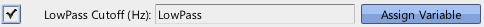
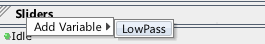
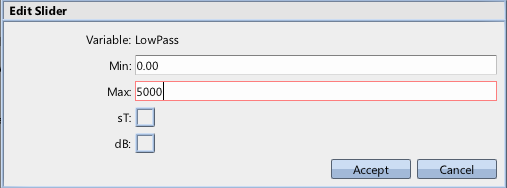
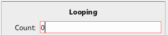
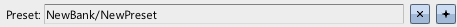
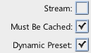
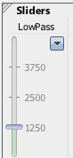
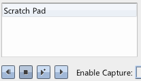

|
Dynamic Presets and Sliders |
| Navigation |
In the last guide, the preset checked the variable when it was applied (at sound start), but then that was it. This may be the desired result, but in some cases you want the preset to constantly update when the game changes the value of the variable.
To be more specific, after a preset is applied, the game can set the variable to whatever it wants and the change will not be picked up. To pick up those changes, the Dynamic flag needs to be set.
Requisite Terminology
New Terminology
Steps

For this example, we are going to set the low pass cutoff of a playing sound to a variable, and adjust that variable over time to see how the preset constantly updates.

In order to adjust the variable on the fly, we need to set it to a Slider. When adding a variable, you need to know what units its going to be in. For instance, if the variable were applied to the playback rate of a sound, it would need to be in semitones (sT). Volume would be decibels. In our case, the units are hertz. Since that is somewhat arbitrary, Miles Studio doesn't have a convenient check box to set up our bounds for us. So we need the next step.

Now the slider will allow adjustment between 0 and 5000, reasonable values for experimenting with low pass cutoff.

In case your sound is somewhat short, we loop infinitely to give time for experimentation.

This assigns the preset to the sound. At this point, the variable will only be checked when the sound starts.

This is the critical step. Now, this sound will tell the preset to check its variables every frame.

Since the slider defaults to 0, you won't be able to hear anything. After all, there are no frequencies below zero! As you adjust the slider, the low pass will update accordingly, and the sound is much more dynamic, and able to respond to game events.

It's important to understand that the dynamic property only matters if a preset uses variables. If there are no variables, then there is nothing to check for changes!
 Ducking and Busses Ducking and Busses |
 Sound Designer User Guide Sound Designer User Guide |
 Environments and Reverb Environments and Reverb |

|
Miles Sound System 9.3b
E-mail miles3@radgametools.com for technical support. Copyright © 1991-2012 by RAD Game Tools, Inc. All Rights Reserved. |

|